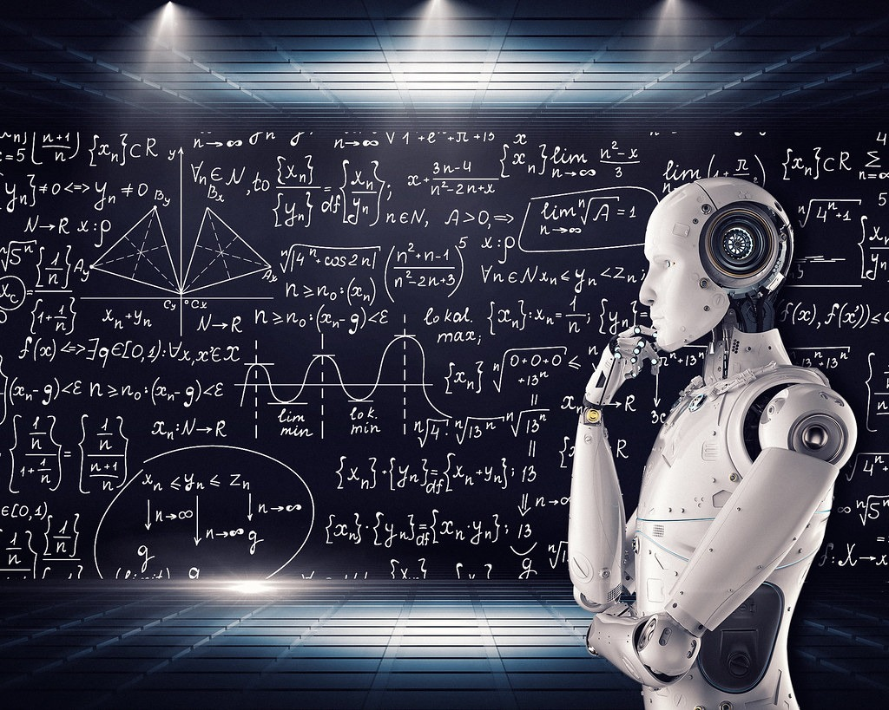

Artificial Intelligence
Home
AI Applications
Advantages & Disadvantages
Purpose of Artificial Intelligence
Prerequisites for Artificial Intelligence

Purpose of Artificial Intelligence
The purpose of Artificial Intelligence is to aid human capabilities and help us make advanced decisions with far-reaching consequences. That’s the answer from a technical standpoint. From a philosophical perspective, Artificial Intelligence has the potential to help humans live more meaningful lives devoid of hard labor, and help manage the complex web of interconnected individuals, companies, states and nations to function in a manner that’s beneficial to all of humanity.
Currently, the purpose of Artificial Intelligence is shared by all the different tools and techniques that we’ve invented over the past thousand years – to simplify human effort, and to help us make better decisions. Artificial Intelligence has also been touted as our Final Invention, a creation that would invent ground-breaking tools and services that would exponentially change how we lead our lives, by hopefully removing strife, inequality and human suffering.
That’s all in the far future though – we’re still a long way from those kinds of outcomes. Currently, Artificial Intelligence is being used mostly by companies to improve their process efficiencies, automate resource-heavy tasks, and to make business predictions based on hard data rather than gut feelings. As all technology that has come before this, the research and development costs need to be subsidized by corporations and government agencies before it becomes accessible to everyday laymen. To learn more about the purpose of artificial intelligence and where it is used, you can take up an AI course and understand the artificial intelligence course details and upskill today.